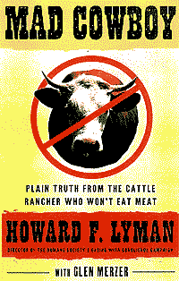

|
High Percentage of
Supermarket Meats Found to be
Contaminated By Drug-resistant Bacteria
Death in the Kitchen
Hogs and Other Hazards

“There may well be cows that ate the same feed this one
did
that have already been slaughtered and eaten by people”
-- Jean Halloran, Consumers Union (MSNBC)
Second Canadian Mad Cow Confirmed
Thousands in Britain may have Mad Cow
USDA
Ends Search
For Possible Mad Cows
Less Than Half Found
|
USDA
Confirms Mad Cow
(BSE)
Has Been Found In U.S.
in a Washington State Cow
Meat from the infected animal was processed and also sent to
Alaska, Montana, Hawaii, Idaho, Oregon, California, Nevada
and the U.S. territory of Guam.
Supermarket chains in the West — Albertsons, Fred
Meyer, Safeway and WinCo Foods have voluntarily removed ground beef
products from the affected distributors. |
USDA Misleading American Public
about Beef Safety
Based on experience in other countries,
"I would assume there are hundreds of cases out there,"
Toronto microbiologist David Westaway said Saturday.
Mad Cow Came From Canada
Japan and Korea
Ban Import of U.S. Beef
Who Needs Meat?
Mad cow disease still threatens U.S.
Italy Confirms 115th Mad Cow
Italy's latest mad cow cases
brings country's total to
113
Japan confirms 9th mad cow case, 2nd in a month
8th Mad Cow found in Japan
Are There "Mad Cows"
in the U.S.?
FDA Reveals Large
Number Of Feed-mill Violations
95 Cases of people with
"Mad Cow" in United Kingdom
"Millions of unaware
people may be infected"
US military moves to
curb 'mad cow' risk
"Mad Cow" Found In
Japan
"Mad Cow" Fear Sweeps
Japan
Infected Japanese Cow
Was Processed Into Animal Feed!
Disease Kills Japan's
Appetite for Beef
Thousands In Britain
May Be Infected From Hospital Operations
Beef find in poultry raises BSE fears
"Mad
Cow" Found in Israel
Japan confirms 5th case of mad-cow disease
Seventh 'mad cow' confirmed in Japan!
Mad Cow Blood
Test Discovered!
Mad Cow Found In Canada
Burger Chain Stocks Drop!
Canada Delayed Mad Cow Diagnosis |